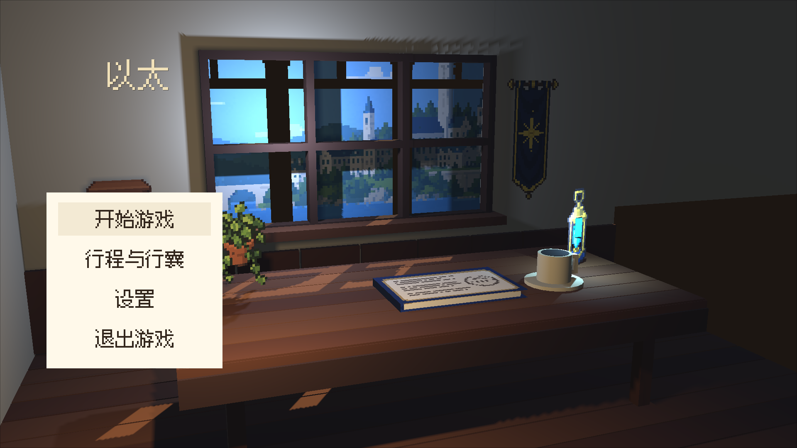
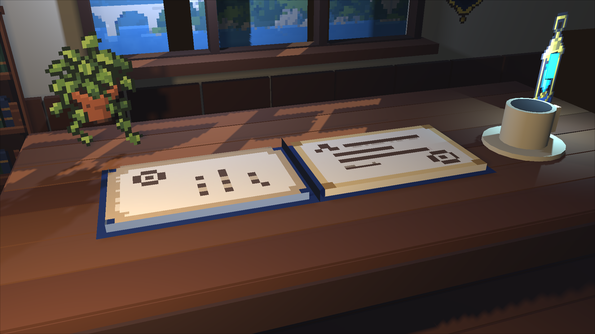
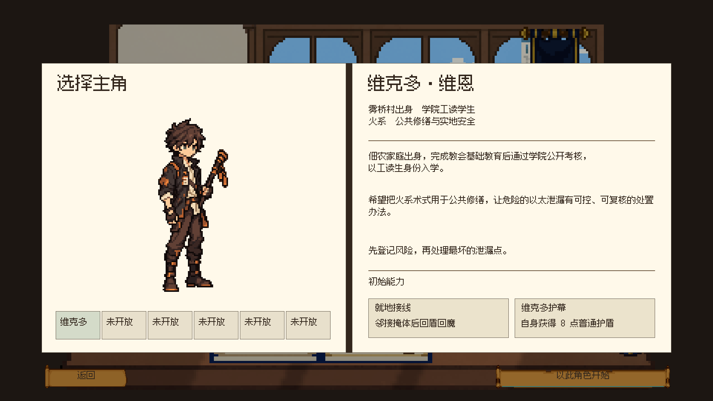
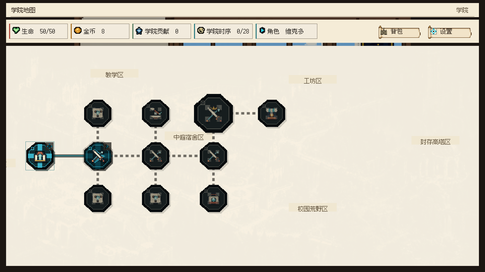

UNITY 实机 · HD-2D 制作样板窗边书桌 · 从房间进入档案
像素书页、植物与学院窗景，组合真实房间、桌面和杯碟体积。日光与以太灯统一作用于场景，开书时镜头向书页推进。
固定书脊开合与镜头推进；移除菜单和转场遮罩后录制。
主菜单 · 没有进行中的一局

书页近景

实际目的界面
开始游戏 → 角色档案；继续游戏 → 隔离验证存档的学院地图。


当前是可运行的制作样板，房间与杯碟使用基础模型，墙面、木料和物件细节尚未完成正式材质制作。书页原料与导入已校验，人工审美确认待定。本轮仅切换主菜单的场景渲染，后续界面沿用当前纸页版本。
战斗外纸页界面